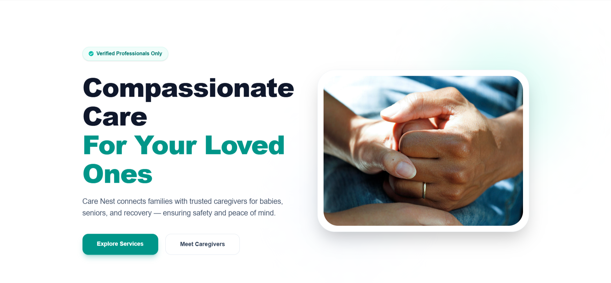

CareNest

Project Links
Description
CareNest is a full-stack caregiving platform connecting customers with care services. Customers book care and pay through Stripe, caregivers apply, manage availability, and track jobs and earnings, and administrators review applications and monitor caregivers.
Main Technology Stack
Next.jsReactTypeScriptTailwind
CSSTanStack QueryReact Hook FormNextAuth.jsMongoDBStripeCloudinarySweetAlert2
Key Features
- Customer booking: browse services, book care, and pay through Stripe Checkout.
- Caregiver workflow: apply with documents, manage availability, track jobs and earnings.
- Admin management: review applications, search and filter caregivers, monitor jobs, ratings, and earnings.
- Authentication: credentials and Google sign-in with NextAuth and role-based access.
- File uploads: images and documents managed through Cloudinary.
- Responsive dashboards: KPI cards, tables, filters, and confirmation dialogs.
How It Works
- 1.
Book
Customer chooses a service and books care. - 2.
Pay
Stripe Checkout handles payment; webhooks update the booking. - 3.
Deliver
Caregivers manage jobs and availability. - 4.
Oversee
Admins review applications and monitor operations.
A Next.js and TypeScript app with NextAuth for authentication, middleware for route protection, MongoDB for data, TanStack Query for client-side server state, Stripe for payments, and Cloudinary for files.
Challenges Faced
- Role-based route protection: implementing customer, caregiver, and admin access using NextAuth and middleware-based protection.
- Booking and payment states: keeping bookings in sync with Stripe Checkout through webhook processing.
- API and tooling bugs: debugging a MongoDB PATCH handler issue and a Turbopack crash during development.
- Data-heavy dashboards: presenting tables, filters, and status information across screen sizes.
Potential Improvements & Future Plans
- Automated testing: add broader test coverage.
- Validation and accessibility: improve form validation and accessibility.
- Analytics and monitoring: add more analytics and monitoring for admins.